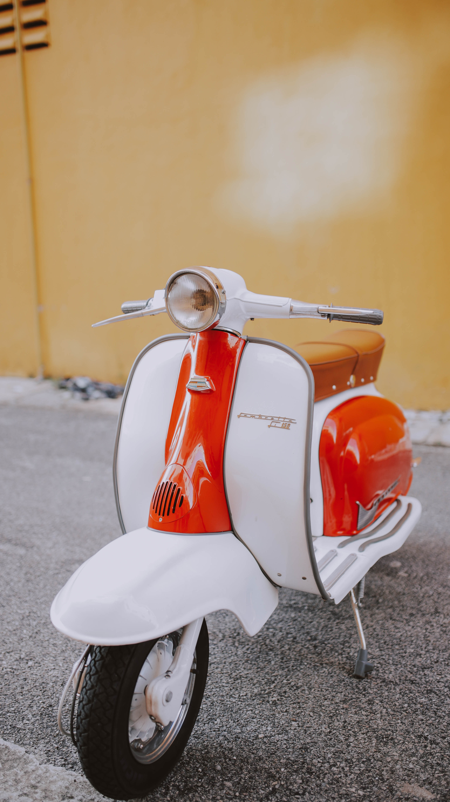

The Vespa story begins in the aftermath of WW II in Italy. The economy was left crippled and the roads were in a disastrous state which made it difficult for the automobile and other manufacturers to reemerge.
The Piaggio family, who was involved in the aerospace industry, decided to find a way to reinvent their business by addressing Italy need for a modern and affordable mode of transportation for the masses.
